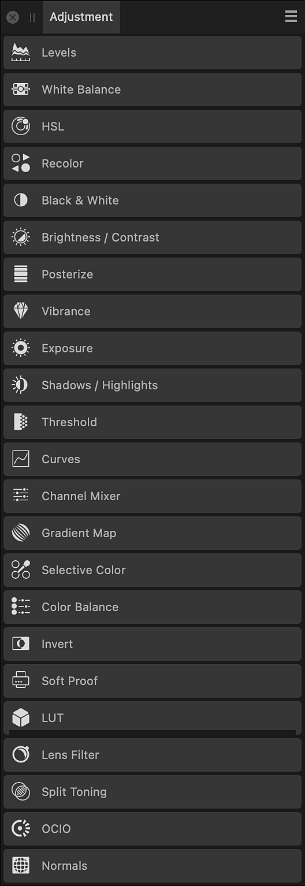

The Adjustment panel allows you to apply color and tonal corrections to your image non-destructively, i.e., without making permanent changes to the underlying pixels.
The Adjustment panel presents color and tonal adjustments under adjustment type (e.g., HSL) as a series of preset thumbnails.

Selecting an adjustment type expands the view to show adjustment thumbnails, with each thumbnail applying an adjustment intended for specific uses (e.g., Desaturate); clicking on a thumbnail applies that preset.
The adjustment is added as an adjustment layer to your layer stack.
As you apply a preset you can fine-tune the preset's settings, optionally creating the modified adjustment as a new preset.
The following general settings are available from all adjustment dialogs: